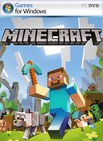

Genre: Rollenspiel
Entwickler: Avalanche Software
Release: 10.02.2023 (PC, PS5, Xbox Series X/S), 04.04.2023 (PS4, Xbox One)
Hogwarts Legacy ist ein Rollenspiel im Harry-Potter-Universum. In einer Open World können wir uns frei bewegen und die berühmte Zauberschule erkunden.
Aber auch das Umland steht uns offen und damit Reisen in das Dörfchen Hogsmeade oder den Verbotenen Wald. Hogwarts Legacy greift vollumfänglich auf
die Lizenz aus den Filmen zurück, die Schule sieht deshalb in vielen Bereichen genau so aus, wie auf der Leinwand. Auch der Soundtrack ist altbekannt.
Zeitlich spielt die Geschichte aber mehrere Jahre vor Harry Potters Einschulung und auch lange vor Voldemort. Wir betreten Hogwarts nämlich im 19. Jahrhundert.
In Hogwarts Legacy spielen wir deshalb auch keinen bekannten Charakter, sondern erstellen uns einen eigenen Helden. Diesen können wir in verschiedene
Richtungen entwickeln und neue Zauber lernen. Auch unser Schulhaus wird von der Story nicht festgelegt.
Den Ganzen Artikel und die Wertung können sie hier nachlesen.

Genre: Echtzeit-Strategie
Entwickler: Relic Entertainment
Release: 23.02.2023 (PC), 2023 (PS5, Xbox Series X/S)
Der dritte Teil von Company of Heroes führt die Spieler an die Kriegsfronten in Italien und Nordafrika. Das Spiel bleibt auch im dritten Anlauf
dem Zweiten Weltkrieg treu und verbessert seine RTS-Gefechte mit Detailarbeit und neuen Features. Beispielsweise gibt es in CoH 3 eine Pausefunktion,
um das Geschehen kurz anzuhalten und in Ruhe Befehle zu erteilen. Deutlich größere Änderungen gibt es in der Einzelspieler-Kampagne.
Erstmalig verzichtet das Spiel auf eine klassische Story-Kampagne. Stattdessen erwartet Spieler eine rundenbasierte Strategie-Karte von Italien, die
es zu erobern gilt. Schlachten und Missionen werden hier aber weiterhin in Echtzeigefechten ausgetragen. Das ganze Funktioniert ähnlich wie bei Total War.
Den Ganzen Artikel und die Wertung können sie hier nachlesen.

Genre: Action-Adventure
Entwickler: Mojang Studios, 4J Studios (PS4)
Release: 18.11.2011 (PC), 03.09.2014 (PS4), 05.09.2014 (Xbox One), 12.05.2017 (Switch), 18.12.2013 (PS3)
Seit Mai 2009 arbeitete der Schwede Markus »Notch« Persson am Blockbau-Spiel Minecraft. Im November 2014 verkaufte er schließlich das von ihm gegründete Entwicklerstudio Mojang
samt Minecraft an Microsoft und verließ die Firma. Was anfänglich wenig mehr als eine Java-Techdemo für prozedural generierte Landschaften war, ist mittlerweile zu einem riesigen Phänomen geworden.
Dabei ist der Kern des Spiels simpel: In einer aus Blöcken zusammengesetzten Landschaft kann der Spieler eben diese Blöcke zertrümmern, neue Bausteine setzen und somit fantastische Bauwerke errichten.
Im Sandbox-Spiel existieren insgesamt fünf Spielmodi. Im Kreativ-Modus kann der Spieler seiner Fantasie freien Lauf lassen, denn es stören weder Materialknappheit noch Monster beim Bauen.
Ganz anders im Überlebens-und Abenteuer-Modus: Hier kommen des Nachts die Gegner (Zombies, Skelette oder die gefürchteten grünen Creeper) raus, deshalb sollte man sich bis dahin tunlichst
einen Unterstand gebaut haben. Mit einem ausgeklügelten Crafting-System besorgt man sich Fackeln, Waffen, Rüstungsteile, Eisenbahnschienen, Essen und nicht zuletzt Schalter und Druckplatten.
In Kombination mit dem seltenen Redstone-Erz lassen sich damit elektrische Schaltkreise bauen, findige Minecraft-Bastler haben sogar schon ganze Computer in die grünen Landschaften des Spiels gebaut.
Der Hardcore-Modus ist eine spezielle Variante des Überlebens-Modus, mit hohem und nicht verstellbarem Schwierigkeitsgrad. Stirbt der Spieler im Hardcore-Modus, ist er gezwungen, die Welt
endgültig zu löschen. Im Zuschauermodus können zwar keine Blöcke zerstört oder gesetzt werden, dafür kann man sich uneingeschränkt durch die Welt bewegen und bleibt für andere Spieler unsichtbar.
Eine rege Modder-Gemeinde kümmert sich vor allem um den umfangreichen Mehrspieler-Modus von Minecraft und versorgt das Spiel zudem mit Grafik-Mods.
Den Ganzen Artikel und die Wertung können sie hier nachlesen.
Genre: Aufbau-Strategie
Entwickler: Ubisoft Blue Byte Studio Mainz
Release: 12.04.2022 (PC)
Für standardmäßig 120 Euro fasst die Anno 1800 Visionärsausgabe vier Jahre DLC-Season-Pässe zu einem gewaltigen Paket zusammen. Neben dem Hauptspiel sind die Addons Der Anarchist, Gesunkene Schätze,
Botanica, Die Passage, Paläste der Macht, Reiche Ernte, Land der Löwen, Speicherstadt, Reisezeit, Dächer der Stadt, Keim der Hoffnung, Reich der Lüfte und Aufstieg der neuen Welt enthalten.
Den Ganzen Artikel und die Wertung können sie hier nachlesen.